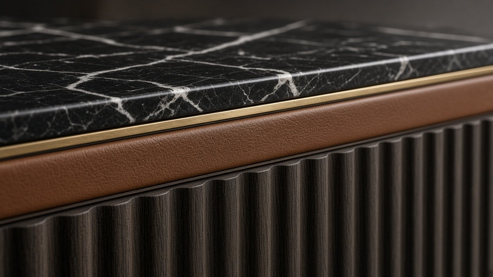
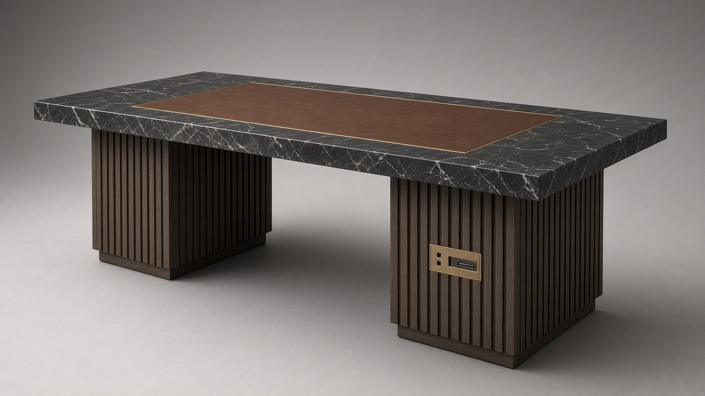

x.classList.remove('on'));this.classList.add('on')">
x.classList.remove('on'));this.classList.add('on')">← Coleção
N.º 10 · Coleção Meridiano
SORRAIA
Secretária-ilha de direção
A peça-ilha: 3 metros de Nero Marquina sobre dois pedestais de carvalho fumado, com cofre e painel técnico em latão.
Preço desde 35.000 €sem IVA · valor indicativo · versões por medida sob consulta
Descarregar ficha técnica (PDF)
Dimensões
| L × P × A | 3000 × 1100 × 750 mm |
| Superfície de escrita | 1400 × 600 mm |
| Altura útil | 710 mm |
Materiais
| Tampo | Mármore nero marquina |
| Pele | Plena flor semi-anilina Tabaco |
| Pedestal | Carvalho fumado canelado |
| Pedestal | Carvalho fumado canelado |
| Metais | Latão e bronze escovados |